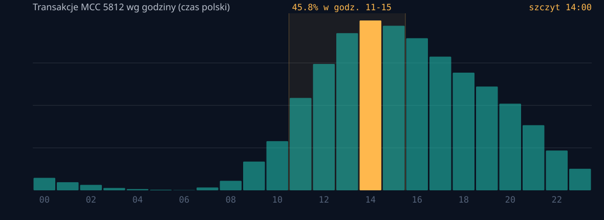
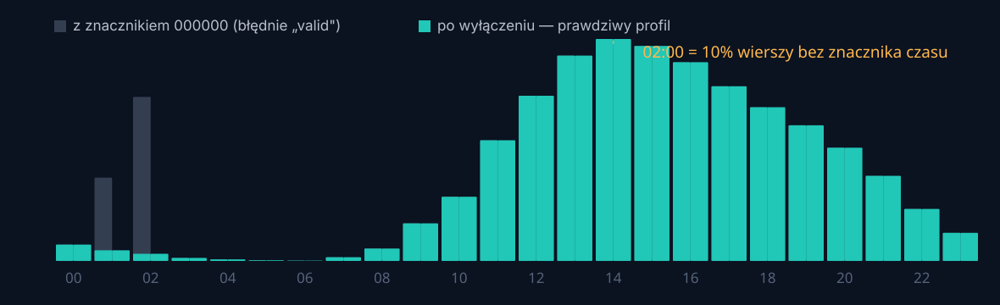
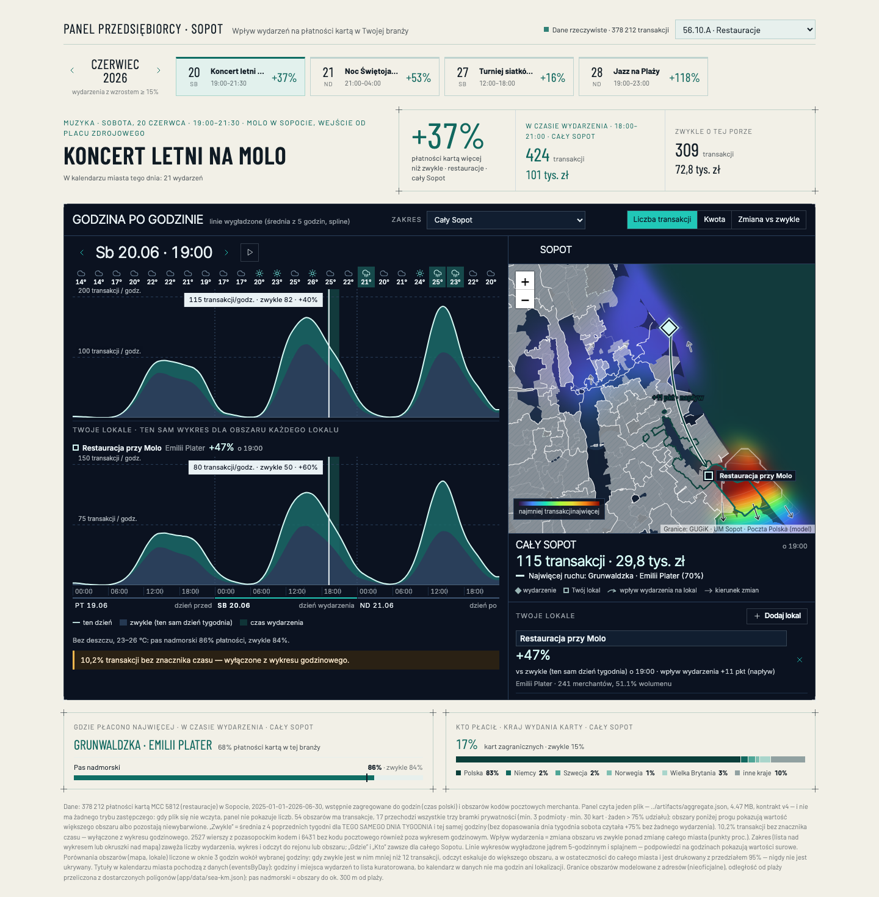
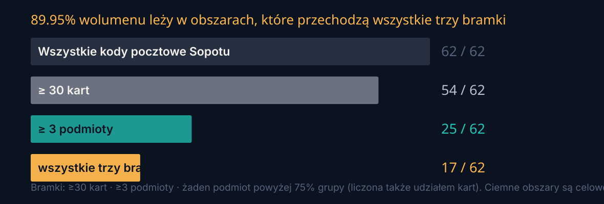

The city and its businesses breathe to the same rhythm.
Sopocka Strona Biznesu — a new tab in the resident card, for businesses registered in the city.
bez nowej aplikacji / no new appbez zbierania sprzedaży firmy / without collecting a firm's own salestylko MCC 5812, tylko Sopot / one trade, one city
378 212transakcji kartą / card transactions
62kody pocztowe / postcodes
347podmiotów / merchant IDs
546dni / days
Problem i użytkownik
Właścicielka dziesięciu stolików nigdy nie zatrudni analityka
The owner of ten tables will never hire an analyst.
Our user: a restaurant in Sopot, MCC 5812, one postcode, no analyst, no CRM, no BI tool.
Dane o ruchu w mieście istnieją — ale nie dla niej.
Nie kupi danych i nie zapłaci za raport.
Ma już aplikację miasta w telefonie. Nie chce nowej.
Dane zanonimizowane i syntetyczne, udostępnione przez Organizatora wyłącznie na potrzeby wyzwania.
Numery kart nie są czytane przez nasz pipeline — w artefakcie publicznym istnieją wyłącznie jako liczność na obszar, na potrzeby bramki 30 kart.
Wniosek 1
Szczyt to lunch o 14:00 — 45,8% ruchu w godz. 11–15
Zmierzony profil dobowy kontra założenie w naszym własnym scenariuszu.
The measured rhythm is a lunch trade, not a dinner one — and 10.2% of rows have no usable timestamp at all.


Wniosek 2
Deszcz działa w każdej specyfikacji. Wydarzenia zależą od tego, ile sezonu zabierzemy
Bez kontroli dni z największą liczbą wydarzeń wypadają +33 pp powyżej średniej, a najspokojniejsze
−27 pp. Po usunięciu efektu miesiąca i dnia tygodnia różnica maleje z 59,8 pp do 8,8 pp.
The event signal is real but an order of magnitude smaller than it first appears. We report the
whole specification curve rather than the one that flatters our own story — and the film's draft claimed +38%.
Statystyka t w dwóch specyfikacjach
Czynnik
z miesiącem
bez miesiąca
deszcz
−9,7
−8,5
temperatura
+11,4
+3,1
wydarzenia
+5,1
+2,8
wiatr
−1,4
−2,0
Co z tego wynika
Deszcz jest jedynym czynnikiem, który jest silny w każdej specyfikacji — więc to jego
pokazujemy jako sterowalny. Wiatr nie jest istotny, więc go nie twierdzimy.
Wydarzenia są realne, ale ich wielkość zależy od tego, ile sezonu pochłoną zmienne miesięczne —
i tak to pokazujemy.
Pełna krzywa specyfikacji jest w docs/MODEL.md;
każda liczba na tym slajdzie ma wiersz w docs/claims.json i przechodzi make verify.
Model i test kroczący
20,5% typowego błędu — i mówimy, co ten wynik poprawia
Test kroczący, 490 dni, wyłącznie z przeszłości, bez podglądania przyszłości.
Walk-forward, expanding window, past-only. The same run also tells us what does NOT help.
Model
MAPE
MAE
MASE
PICP80
Werdykt
Baza + pogoda + wydarzenia
20,5%
145,2
0,759
80,6%
nasz model / shipped
Mediana z 4 takich samych dni — sama baza
22,8%
166,3
0,869
78,6%
najlepsza baza
Średnia z 4 takich samych dni
24,1%
169,9
0,888
78,2%
—
Sezonowa naiwna (ta sama godzina, poprzedni tydzień)
26,4%
188,5
0,986
79,6%
najsłabsza
Czynniki poprawiają naszą własną bazę o 2,3 pp (24,1% → 20,5%) i sezonową naiwną o 5,8 pp.
Przedział 80% pokrywa 80,6% dni — czyli jest skalibrowany, a nie tylko wąski.
The intervals are calibrated, not merely narrow: an 80% interval covers 80.6% of days.
Everything here is one command — make data — and re-checked by make verify.
Produkt
Cztery zdania, które zmieniają tydzień właścicielki
Kalendarz · Mapa · Godzina po godzinie · Obsada.
Not a dashboard: a recommendation. Every number below is computed, none is written by a language model.

1. Dziś spodziewaj się ~X transakcji (P10–P90: Y–Z).
2. To o N% więcej niż typowa sobota w czerwcu.
3. Główny czynnik: deszcz — wkład ±N pp.
4. Obsada: zmiana wzmocniona. Promocja: tak.
Nowa zakładka „Strona Biznesu” w Karcie Sopockiej — ten sam serwis, którego miasto już używa.
Prywatność
18 z 62 obszarów przechodzi bramkę — reszta jest celowo wygaszona
30 kart · 3 podmioty · żaden powyżej 75% grupy — dokładnie jak w §3 regulaminu.
The gate is not a limitation we hide; it is a rule we implement, measure and show.

Bramka prawie nic nie kosztuje. Obszary, które ją przechodzą, obejmują
19,0% adresów Sopotu, ale 90,7% wolumenu transakcji. Wyłączamy dokładnie te cienkie obszary,
w których możliwa byłaby identyfikacja pojedynczego lokalu.
Dwie płaszczyzny, nigdy razem. Własne dane lokalu (za zgodą, jeden podmiot)
oraz porównanie zbiorcze (pula, musi przejść wszystkie bramki). Panel zawsze mówi:
„Dane dla obszaru 81-777, nie dla Twojego lokalu.”Plus a leave-one-out gate: the merchant is inside every comparison cell and must not be able to difference themselves out.
Architektura i rola AI
Potok jest wykonywalny — a AI nie liczy żadnej liczby
Seven stages, one command, zero external requests in the running demo.
AI built and analysed this project. It is not in the decision path.
Brak rejestru lokali — nie twierdzimy „X% restauracji w obszarze”
Integracja z CMS miasta (u nas replika)
Pogoda miejska, nie dzielnicowa
Granica AI
AI użyte do budowy, analizy i dokumentacji. W ścieżce decyzyjnej nie ma modelu językowego:
prognoza to jawny wzór, możliwy do audytu i przeliczenia. Ujawnienie użycia AI — wymagane przez Organizatora — w docs/EVIDENCE.md.
Bilans
Co jest gotowe, co jest prototypem, a czego nie twierdzimy
Gotowe
Panel na 378 212 realnych transakcjach
Kaskada prywatności z mierzonym wynikiem
Backtest kroczący i uczciwy błąd 24,1%
Potok odtwarzalny jedną komendą
Prototyp
Model prognozy i warstwa obsady
Granice kodów: model, nie urzędowe
Integracja z Kartą Sopocką
Kalendarz wydarzeń bez godzin i miejsc
Nie twierdzimy
że wydarzenia powodują wzrost — kontrola sezonowa
że mamy dane z innych kategorii niż MCC 5812
że pogoda różni się między dzielnicami
że liczby z filmu są zweryfikowane — są robocze
Droga do pilotażu
1 · zgoda miasta→2 · rejestr lokali→3 · 3 miesiące A/B→4 · zakładka dla firm w Karcie Sopockiej